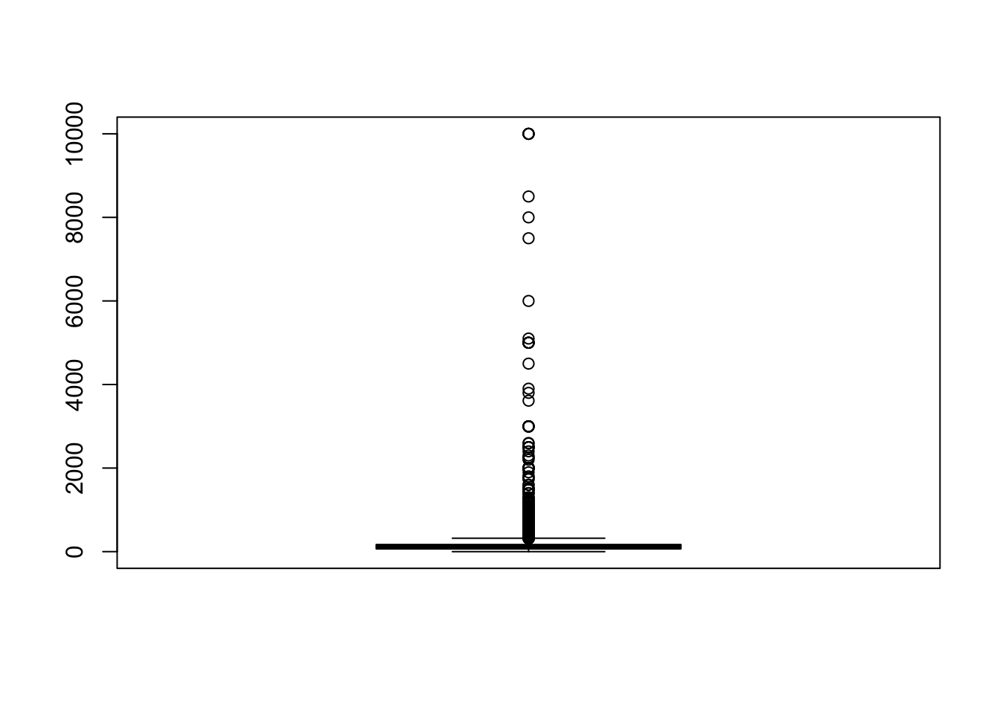
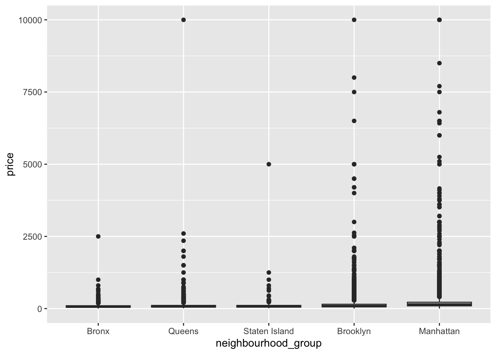
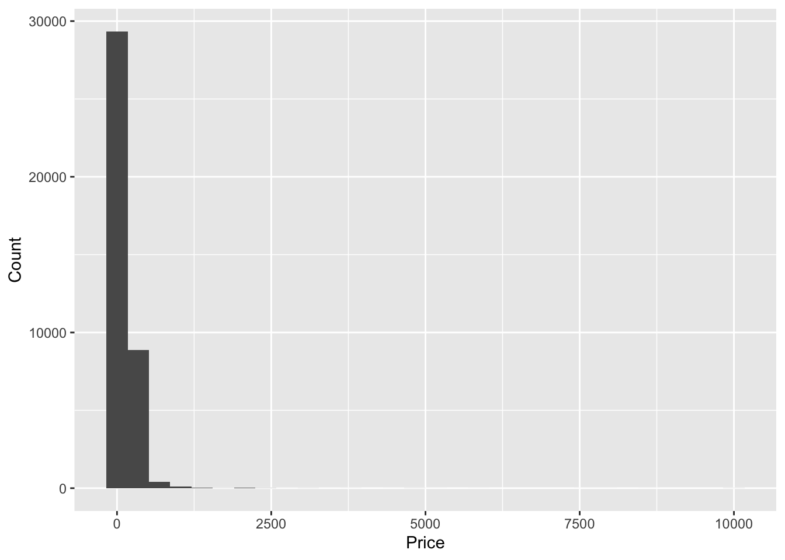
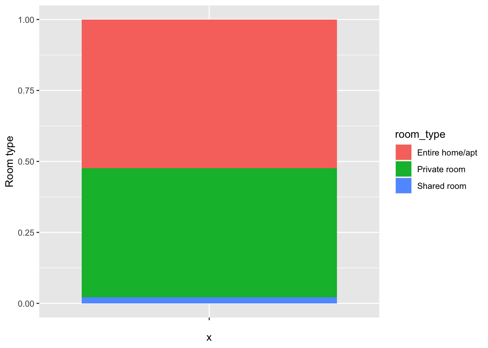
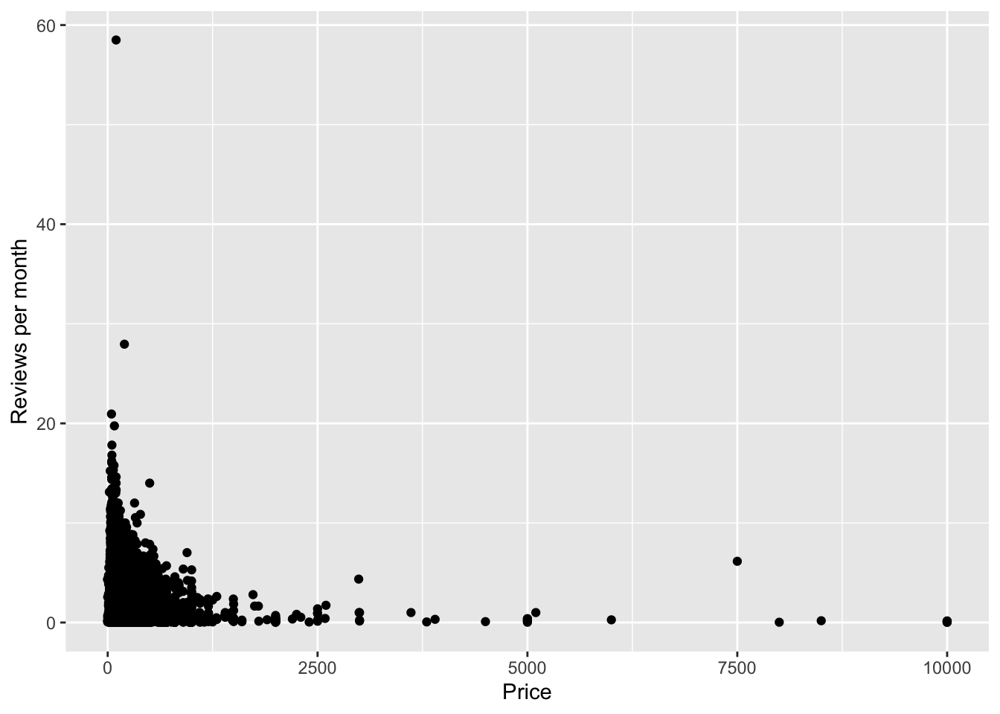
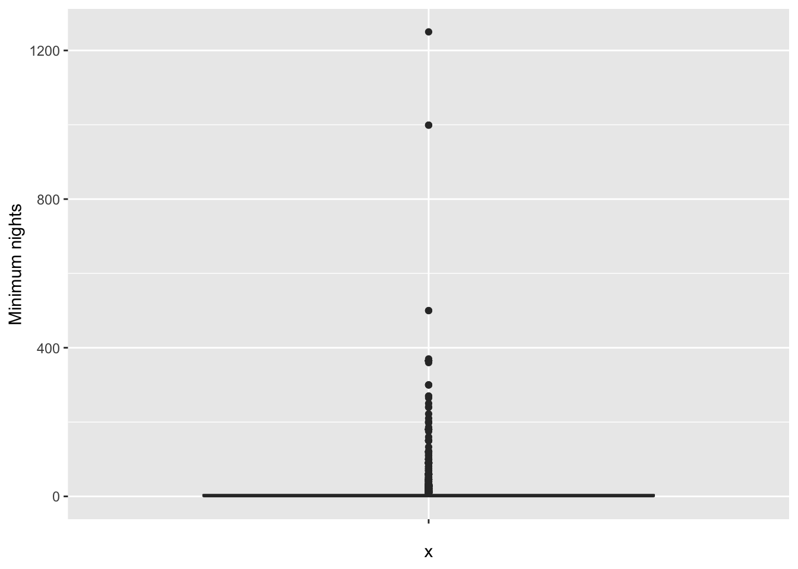
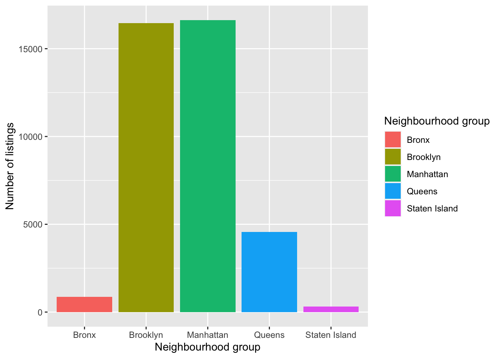
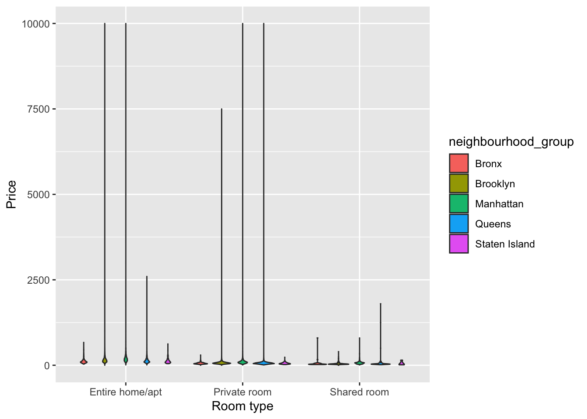
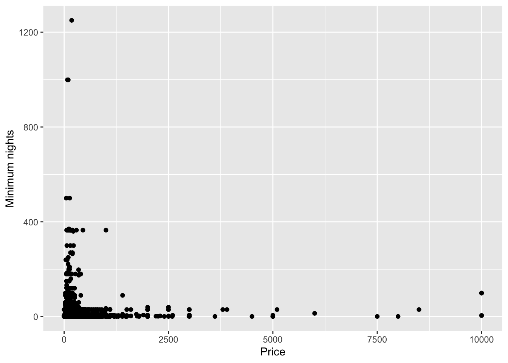

library(tidyverse)
library(tidyr)
library(ggplot2)
library(csv)
knitr::opts_chunk$set(echo = TRUE, warning=FALSE, message=FALSE)Challenge 5 Instructions
true
true
true
Introduction to Visualization
Read in data
Reading AB_NYC_2019
library(readr)
# Load the data set
data <- read.csv("~/Desktop/601_Spring_2023/posts/_data/AB_NYC_2019.csv")Briefly describe the data
AB_NYC_2019.csv is a dataset containing information about Airbnb listings in New York City in 2019. It can be used to analyze various aspects of the Airbnb market.
Tidy Data (as needed)
Inspecting the dataset to get an idea of its structure and contents using functions such as head(), tail(), str(), and summary():
df <- read.csv("~/Desktop/601_Spring_2023/posts/_data/AB_NYC_2019.csv")
head(df) id name host_id host_name
1 2539 Clean & quiet apt home by the park 2787 John
2 2595 Skylit Midtown Castle 2845 Jennifer
3 3647 THE VILLAGE OF HARLEM....NEW YORK ! 4632 Elisabeth
4 3831 Cozy Entire Floor of Brownstone 4869 LisaRoxanne
5 5022 Entire Apt: Spacious Studio/Loft by central park 7192 Laura
6 5099 Large Cozy 1 BR Apartment In Midtown East 7322 Chris
neighbourhood_group neighbourhood latitude longitude room_type price
1 Brooklyn Kensington 40.64749 -73.97237 Private room 149
2 Manhattan Midtown 40.75362 -73.98377 Entire home/apt 225
3 Manhattan Harlem 40.80902 -73.94190 Private room 150
4 Brooklyn Clinton Hill 40.68514 -73.95976 Entire home/apt 89
5 Manhattan East Harlem 40.79851 -73.94399 Entire home/apt 80
6 Manhattan Murray Hill 40.74767 -73.97500 Entire home/apt 200
minimum_nights number_of_reviews last_review reviews_per_month
1 1 9 2018-10-19 0.21
2 1 45 2019-05-21 0.38
3 3 0 NA
4 1 270 2019-07-05 4.64
5 10 9 2018-11-19 0.10
6 3 74 2019-06-22 0.59
calculated_host_listings_count availability_365
1 6 365
2 2 355
3 1 365
4 1 194
5 1 0
6 1 129tail(df) id name host_id
48890 36484363 QUIT PRIVATE HOUSE 107716952
48891 36484665 Charming one bedroom - newly renovated rowhouse 8232441
48892 36485057 Affordable room in Bushwick/East Williamsburg 6570630
48893 36485431 Sunny Studio at Historical Neighborhood 23492952
48894 36485609 43rd St. Time Square-cozy single bed 30985759
48895 36487245 Trendy duplex in the very heart of Hell's Kitchen 68119814
host_name neighbourhood_group neighbourhood latitude longitude
48890 Michael Queens Jamaica 40.69137 -73.80844
48891 Sabrina Brooklyn Bedford-Stuyvesant 40.67853 -73.94995
48892 Marisol Brooklyn Bushwick 40.70184 -73.93317
48893 Ilgar & Aysel Manhattan Harlem 40.81475 -73.94867
48894 Taz Manhattan Hell's Kitchen 40.75751 -73.99112
48895 Christophe Manhattan Hell's Kitchen 40.76404 -73.98933
room_type price minimum_nights number_of_reviews last_review
48890 Private room 65 1 0
48891 Private room 70 2 0
48892 Private room 40 4 0
48893 Entire home/apt 115 10 0
48894 Shared room 55 1 0
48895 Private room 90 7 0
reviews_per_month calculated_host_listings_count availability_365
48890 NA 2 163
48891 NA 2 9
48892 NA 2 36
48893 NA 1 27
48894 NA 6 2
48895 NA 1 23str(df)'data.frame': 48895 obs. of 16 variables:
$ id : int 2539 2595 3647 3831 5022 5099 5121 5178 5203 5238 ...
$ name : chr "Clean & quiet apt home by the park" "Skylit Midtown Castle" "THE VILLAGE OF HARLEM....NEW YORK !" "Cozy Entire Floor of Brownstone" ...
$ host_id : int 2787 2845 4632 4869 7192 7322 7356 8967 7490 7549 ...
$ host_name : chr "John" "Jennifer" "Elisabeth" "LisaRoxanne" ...
$ neighbourhood_group : chr "Brooklyn" "Manhattan" "Manhattan" "Brooklyn" ...
$ neighbourhood : chr "Kensington" "Midtown" "Harlem" "Clinton Hill" ...
$ latitude : num 40.6 40.8 40.8 40.7 40.8 ...
$ longitude : num -74 -74 -73.9 -74 -73.9 ...
$ room_type : chr "Private room" "Entire home/apt" "Private room" "Entire home/apt" ...
$ price : int 149 225 150 89 80 200 60 79 79 150 ...
$ minimum_nights : int 1 1 3 1 10 3 45 2 2 1 ...
$ number_of_reviews : int 9 45 0 270 9 74 49 430 118 160 ...
$ last_review : chr "2018-10-19" "2019-05-21" "" "2019-07-05" ...
$ reviews_per_month : num 0.21 0.38 NA 4.64 0.1 0.59 0.4 3.47 0.99 1.33 ...
$ calculated_host_listings_count: int 6 2 1 1 1 1 1 1 1 4 ...
$ availability_365 : int 365 355 365 194 0 129 0 220 0 188 ...summary(df) id name host_id host_name
Min. : 2539 Length:48895 Min. : 2438 Length:48895
1st Qu.: 9471945 Class :character 1st Qu.: 7822033 Class :character
Median :19677284 Mode :character Median : 30793816 Mode :character
Mean :19017143 Mean : 67620011
3rd Qu.:29152178 3rd Qu.:107434423
Max. :36487245 Max. :274321313
neighbourhood_group neighbourhood latitude longitude
Length:48895 Length:48895 Min. :40.50 Min. :-74.24
Class :character Class :character 1st Qu.:40.69 1st Qu.:-73.98
Mode :character Mode :character Median :40.72 Median :-73.96
Mean :40.73 Mean :-73.95
3rd Qu.:40.76 3rd Qu.:-73.94
Max. :40.91 Max. :-73.71
room_type price minimum_nights number_of_reviews
Length:48895 Min. : 0.0 Min. : 1.00 Min. : 0.00
Class :character 1st Qu.: 69.0 1st Qu.: 1.00 1st Qu.: 1.00
Mode :character Median : 106.0 Median : 3.00 Median : 5.00
Mean : 152.7 Mean : 7.03 Mean : 23.27
3rd Qu.: 175.0 3rd Qu.: 5.00 3rd Qu.: 24.00
Max. :10000.0 Max. :1250.00 Max. :629.00
last_review reviews_per_month calculated_host_listings_count
Length:48895 Min. : 0.010 Min. : 1.000
Class :character 1st Qu.: 0.190 1st Qu.: 1.000
Mode :character Median : 0.720 Median : 1.000
Mean : 1.373 Mean : 7.144
3rd Qu.: 2.020 3rd Qu.: 2.000
Max. :58.500 Max. :327.000
NA's :10052
availability_365
Min. : 0.0
1st Qu.: 0.0
Median : 45.0
Mean :112.8
3rd Qu.:227.0
Max. :365.0
Checking for missing values and handle them if necessary using functions such as is.na(), sum(), na.omit().
# Check for missing values
sum(is.na(df))[1] 10052# Remove rows with missing values
df <- na.omit(df)Cleaning and transforming the data as needed using functions such as, as.numeric(), and rename().
# Load the data set
data <- read.csv("~/Desktop/601_Spring_2023/posts/_data/AB_NYC_2019.csv",stringsAsFactors = FALSE)
# check for missing values
sum(is.na(data))[1] 10052# if there are missing values, remove the rows with missing values
data <- data[complete.cases(data), ]
# check for duplicates
sum(duplicated(data))[1] 0# remove duplicates
data <- data[!duplicated(data), ]
# visualize the price column using a boxplot
boxplot(data$price)
# remove outliers (in this case, we will remove prices above $1,000 per night)
data <- data[data$price <= 1000, ]
# rename columns
colnames(data)[1] <- "id"
colnames(data)[2] <- "name"
colnames(data)[3] <- "host_id"
colnames(data)[4] <- "host_name"
colnames(data)[5] <- "neighbourhood_group"
colnames(data)[6] <- "neighbourhood"
colnames(data)[7] <- "latitude"
colnames(data)[8] <- "longitude"
colnames(data)[9] <- "room_type"
colnames(data)[10] <- "price"
colnames(data)[11] <- "minimum_nights"
colnames(data)[12] <- "number_of_reviews"
colnames(data)[13] <- "last_review"
colnames(data)[14] <- "reviews_per_month"
colnames(data)[15] <- "calculated_host_listings_count"
colnames(data)[16] <- "availability_365"
# remove unnecessary columns (in this case, we will remove the id, host_name, and last_review columns)
data <- subset(data, select = -c(id, host_name, last_review))
# convert data types (in this case, we will convert the price and minimum_nights columns to numeric)
data$price <- as.numeric(data$price)
data$minimum_nights <- as.numeric(data$minimum_nights)Save the cleaned data
# Load the data set
data <- read.csv("~/Desktop/601_Spring_2023/posts/_data/AB_NYC_2019.csv",stringsAsFactors = FALSE)
# save the cleaned dataset to a new file
write.csv(data, "~/Desktop/601_Spring_2023/posts/_data/cleaned_airbnb.csv", row.names = FALSE)The resulting dataset will have a row for each date where the availability of the listing is “available” or “not available”, and a new column for the month of the date.
# Load the data set
data <- read.csv("~/Desktop/601_Spring_2023/posts/_data/AB_NYC_2019.csv")
AB_NYC_2019_long <- pivot_longer(AB_NYC_2019, cols = c("availability_365"), names_to = "date", values_to = "availability")Error in pivot_longer(AB_NYC_2019, cols = c("availability_365"), names_to = "date", : object 'AB_NYC_2019' not foundAB_NYC_2019_long <- mutate(AB_NYC_2019_long, month = substr(date, 6, 7))Error in mutate(AB_NYC_2019_long, month = substr(date, 6, 7)): object 'AB_NYC_2019_long' not foundhead(AB_NYC_2019_long)Error in head(AB_NYC_2019_long): object 'AB_NYC_2019_long' not foundRename variables if necessary using the rename() function from the dplyr package:
library(dplyr)
# Rename the neighbourhood variable to neighborhood
df <- rename(df, neighborhood = neighbourhood)Convert variables to appropriate data types if necessary using functions such as as.Date(), as.POSIXct(), and as.factor():
# Convert the last_review variable to a date
df$last_review <- as.Date(df$last_review, format='%Y-%m-%d')Mutate() and head() are used to create a new variable named “total_price”.
# Load the required packages
library(dplyr)
# Load the data set
data <- read.csv("~/Desktop/601_Spring_2023/posts/_data/AB_NYC_2019.csv")
# Mutate the data set
data <- data %>%
mutate(total_price = price * minimum_nights) # Create a new variable named "total_price" that multiplies "price" and "minimum_nights"
# View the mutated data set
head(data) id name host_id host_name
1 2539 Clean & quiet apt home by the park 2787 John
2 2595 Skylit Midtown Castle 2845 Jennifer
3 3647 THE VILLAGE OF HARLEM....NEW YORK ! 4632 Elisabeth
4 3831 Cozy Entire Floor of Brownstone 4869 LisaRoxanne
5 5022 Entire Apt: Spacious Studio/Loft by central park 7192 Laura
6 5099 Large Cozy 1 BR Apartment In Midtown East 7322 Chris
neighbourhood_group neighbourhood latitude longitude room_type price
1 Brooklyn Kensington 40.64749 -73.97237 Private room 149
2 Manhattan Midtown 40.75362 -73.98377 Entire home/apt 225
3 Manhattan Harlem 40.80902 -73.94190 Private room 150
4 Brooklyn Clinton Hill 40.68514 -73.95976 Entire home/apt 89
5 Manhattan East Harlem 40.79851 -73.94399 Entire home/apt 80
6 Manhattan Murray Hill 40.74767 -73.97500 Entire home/apt 200
minimum_nights number_of_reviews last_review reviews_per_month
1 1 9 2018-10-19 0.21
2 1 45 2019-05-21 0.38
3 3 0 NA
4 1 270 2019-07-05 4.64
5 10 9 2018-11-19 0.10
6 3 74 2019-06-22 0.59
calculated_host_listings_count availability_365 total_price
1 6 365 149
2 2 355 225
3 1 365 450
4 1 194 89
5 1 0 800
6 1 129 600The “AB_NYC_2019.csv” dataset can be transformed into factors and reordered for ease of graphics and visualization, such as the “neighbourhood_group” variable.
# Load the required packages
library(dplyr)
library(forcats)
# Load the data set
data <- read.csv("~/Desktop/601_Spring_2023/posts/_data/AB_NYC_2019.csv")
# Convert the neighbourhood_group variable to a factor with the desired levels
data$neighbourhood_group <- factor(data$neighbourhood_group, levels = c("Manhattan", "Brooklyn", "Queens", "Bronx", "Staten Island"))
# Reorder the levels of the neighbourhood_group factor based on median price
data$neighbourhood_group <- fct_reorder(data$neighbourhood_group, data$price, .fun = median)
# Plot a box plot of price grouped by neighbourhood_group
ggplot(data, aes(x = neighbourhood_group, y = price)) +
geom_boxplot()
Label encoding can be used to represent string values numerically, such as the “room_type” variable in the “AB_NYC_2019.csv” dataset.
# Load the data set
data <- read.csv("~/Desktop/601_Spring_2023/posts/_data/AB_NYC_2019.csv")
# Convert the room_type variable to a factor
data$room_type <- factor(data$room_type)
# Convert the factor levels to integers using as.numeric()
data$room_type_numeric <- as.numeric(data$room_type)
# Display the first few rows of the data
head(data[, c("room_type", "room_type_numeric")]) room_type room_type_numeric
1 Private room 2
2 Entire home/apt 1
3 Private room 2
4 Entire home/apt 1
5 Entire home/apt 1
6 Entire home/apt 1Univariate Visualizations
Histogram: to visualize the distribution of continuous variables, such as price or reviews_per_mo.
library(ggplot2)
# Plot the histogram of the price variable
ggplot(data=df, aes(x=price)) +
geom_histogram(bins=30) +
labs(x='Price', y='Count')
Pie chart: to visualize the proportion of categorical variables, such as room_type.
# Plot the pie chart of the room_type variable
ggplot(data=df, aes(x='', fill=room_type)) +
geom_bar(position='fill') +
labs(y='Room type')
Scatter plot: to visualize the relationship between two continuous variables, such as price and reviews_per_mo.
# Plot the scatter plot of price and reviews_per_mo
ggplot(data=df, aes(x=price, y = reviews_per_month)) +
geom_point() +
labs(x='Price', y='Reviews per month')
Box plot: to visualize the distribution of continuous variables and detect outliers, such as min_nights or reviews.
# Plot the box plot of the min_nights variable
ggplot(data = df, aes(x='', y = minimum_nights)) +
geom_boxplot() +
labs(y='Minimum nights')
Bivariate Visualization(s)
Bar plot: to visualize the relationship between a categorical variable and a count variable, such as neighbourhood_group and the number of listings.
# Plot the bar plot of the number of listings by neighbourhood_group
ggplot(data=df, aes(x=neighbourhood_group, fill=neighbourhood_group)) +
geom_bar() +
labs(x='Neighbourhood group', y='Number of listings') +
scale_fill_discrete(name='Neighbourhood group')
Violin plot: to visualize the relationship between two categorical variables and a continuous variable, such as room type, borough, and price.
# Plot the violin plot of price by room type and neighbourhood_group
ggplot(data=df, aes(x=room_type, y = price, fill = neighbourhood_group)) +
geom_violin() +
labs(x='Room type', y='Price') +
scale_fill_discrete(name= 'neighbourhood_group')
Scatter plot: to visualize the relationship between two continuous variables, such as price and minimum nights.
# Plot the scatter plot of price and minimum nights
ggplot(data=df, aes(x=price, y=minimum_nights)) +
geom_point() +
labs(x='Price', y='Minimum nights')